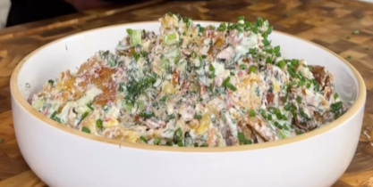

Smashed Potatoes Salad

A simple and delicious potato salad recipe.
Ingredients:
- 2 Ibs baby potatoes
- 1 tbs olive oil salt and pepper to taste
- 3/4 cup Greek yogurt
- 1/2 cup mayo
- 2 tsp Dijon mustard
- 1/2 large lemon
- 4 garlic clove
- 1 tsp bell pepper powder
- 1/4 cup fresh dill
- 1/4 cup fresh parsley
- 1 medium cucumber
- 1/2 red onion
- Celery
- 1 shallot
Steps:
- Boil the potatoes.
- Smash the potatoes.
- Cook the potatoes in the oven for 40 minutes at 180º.
- Add Greek Yogurt, mayo, mustard, salt, pepper, bell pepper powder and lemon juice in a bowl.
- Chop the dill, red onion, cucumber, shallot, parsley and celery.
- Mince the garlic cloves.
- Add everything in the bowl.
- Add the smashed potatoes.
- Mix all the ingredients.
- Eat!